Book Design — Archival Work
in theory + in practice: my relationship with physics
A double-sided book exploring physics through two lenses: one academic and archival, one chaotic, poetic, and personal — mirroring the gap between admiring a discipline from a distance and the messy reality of engaging with it directly.
This book is double-sided. One side presents an academic exploration of physics — explanations of concepts, hand-drawn diagrams and equations sourced from old handbooks and student examination books, archival imagery, and historical photographs. The other side expresses the chaotic, philosophical, and poetic dimensions of attempting to understand the same subject: color, digital illustration, experimental typography, poems about physics, and the feeling of what it's like to actually think about it.
The duality mirrors my own relationship with physics: admiration from a distance, and the messy, often frustrating reality of engaging with it directly. Neither side of the book resolves the tension — they hold it together.
Archival Research
The academic side draws from institutional archives. Materials came from the California Institute of Technology Archives and Special Collections — including student notebooks from the 1940s–1990s covering topics from freshman physics to neural networks — as well as Yale's Peabody Museum History of Science and Technology collection, which contributed scientific instruments and apparatus. The Natural Science Manuscripts Collection, Henry A. Kissinger Papers, historical photographs from the New York Public Library's digital collections, and fragments from medical physics journals rounded out the source material, bringing unexpected intersections between science and other disciplines.
The Abstract Side
The other half of the book is more personal and experimental — my own digital illustrations, typographic play, and poems about physics. It's less about explaining the subject and more about capturing how my brain feels when I engage with it: the frustration, the wonder, and the sense of reaching toward something that keeps receding.
Book Photography
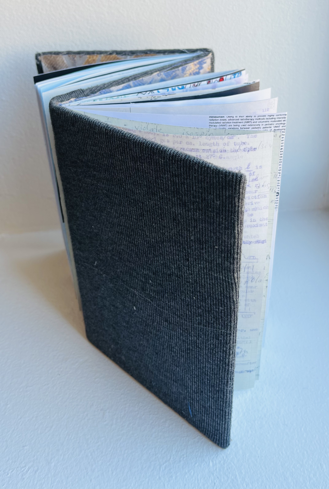
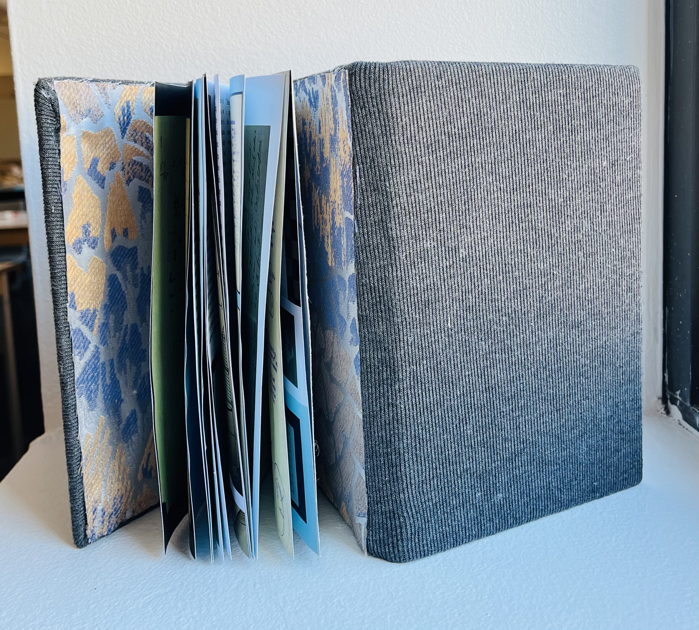
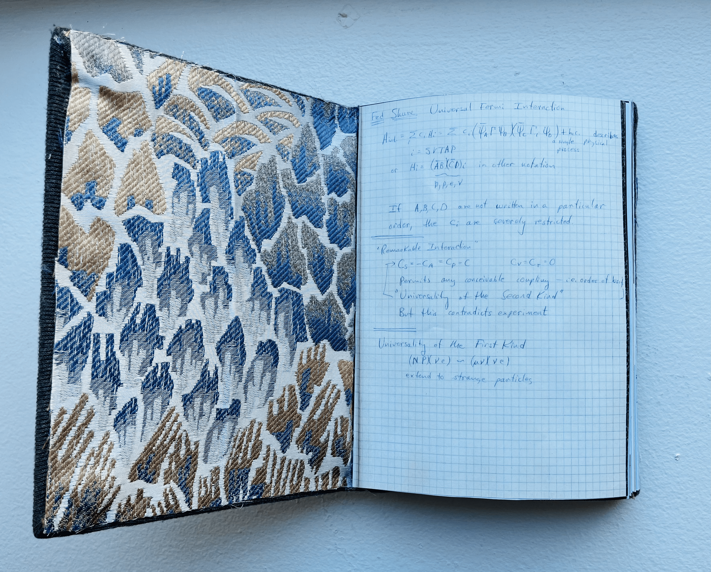
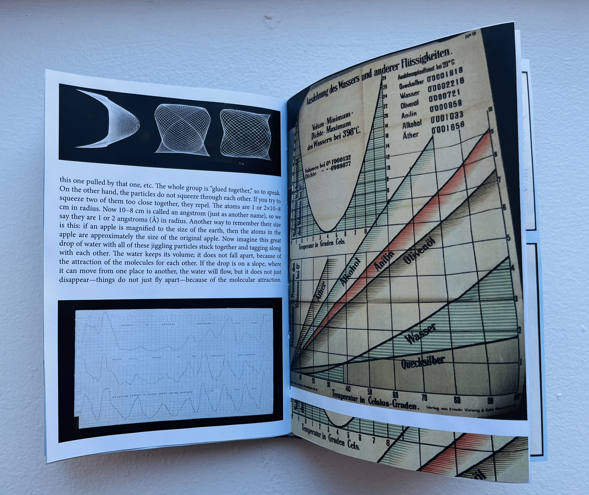
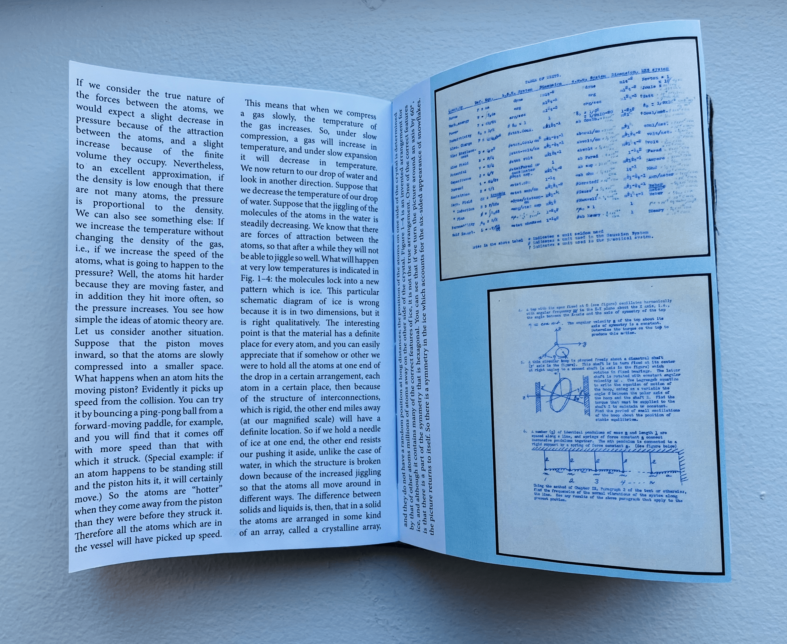
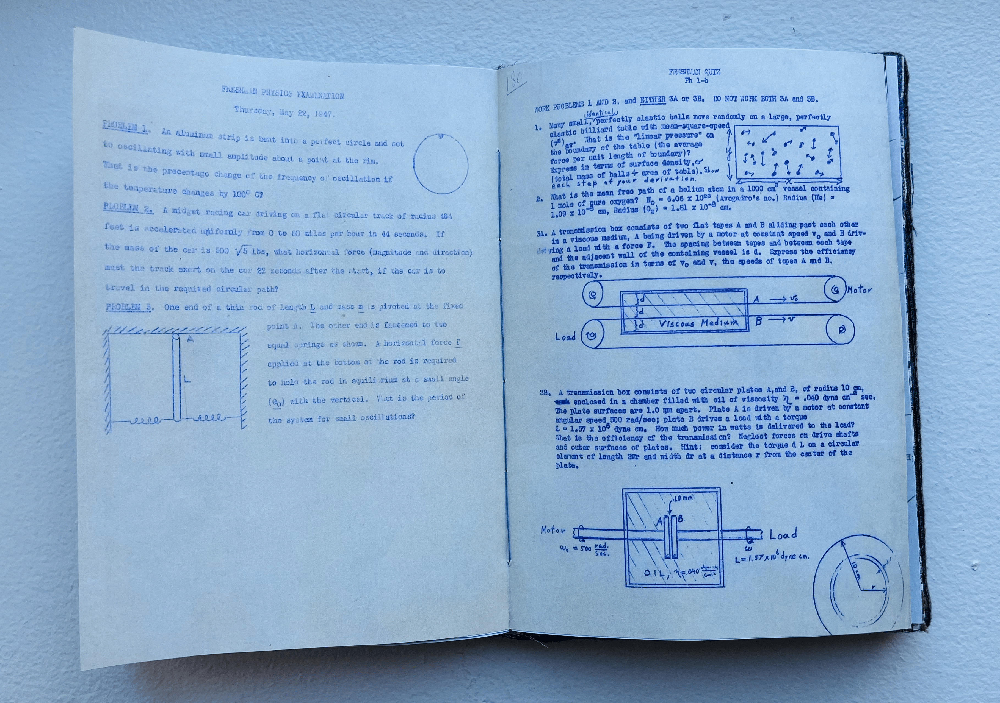
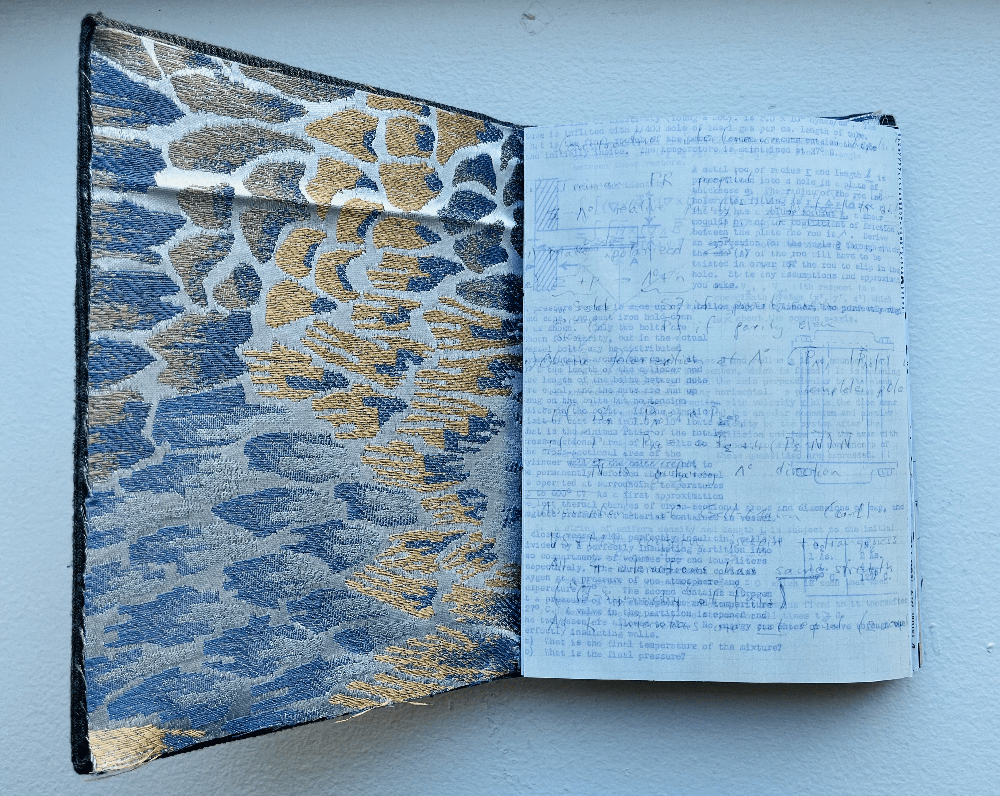
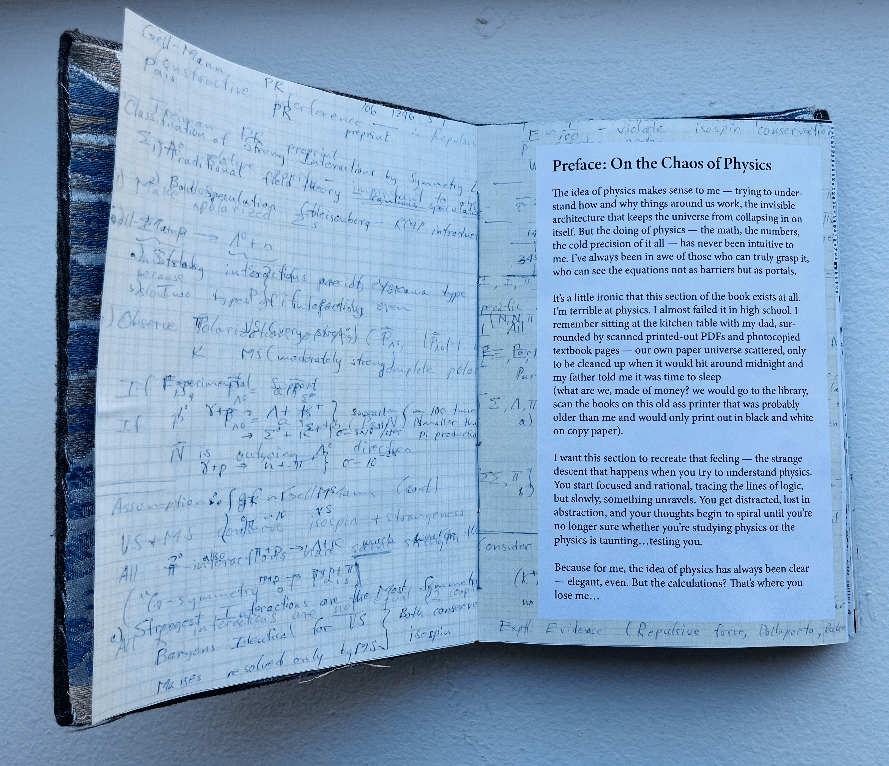
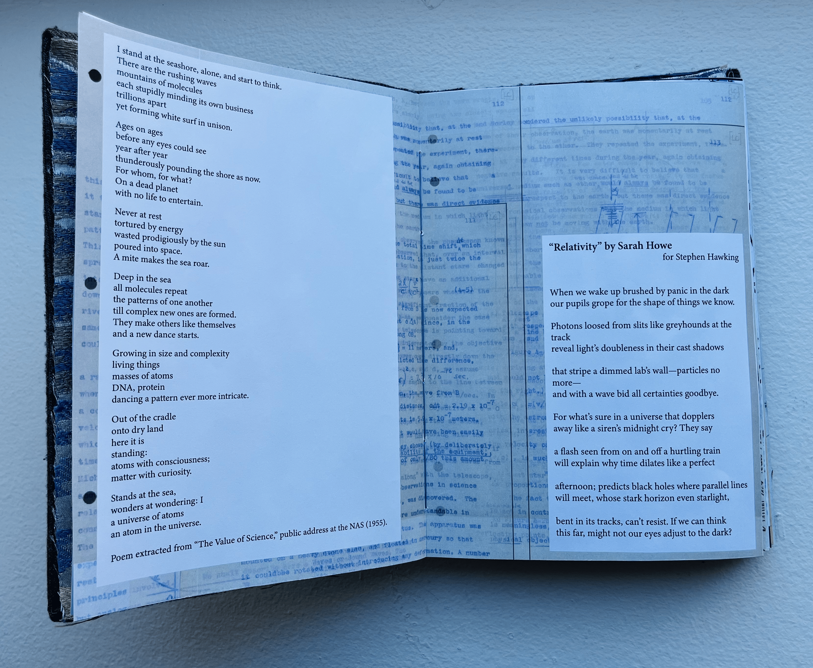
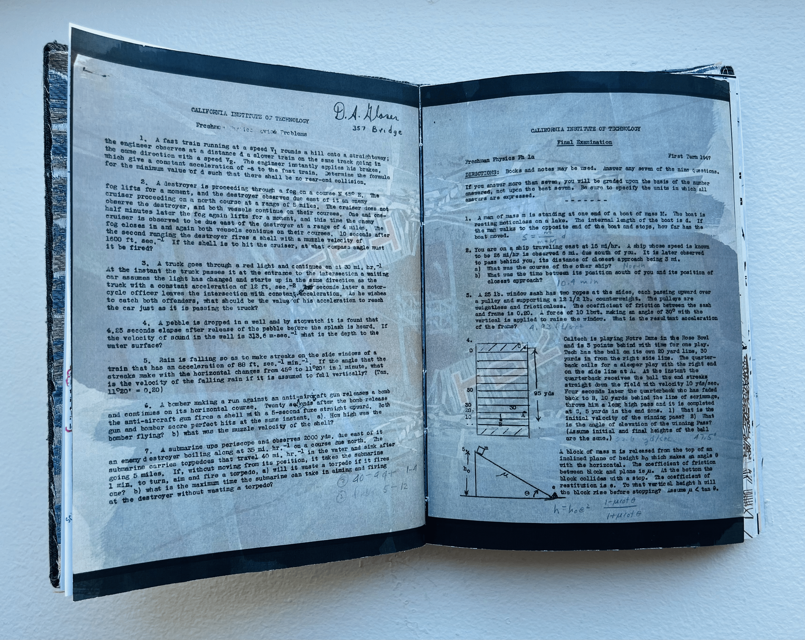
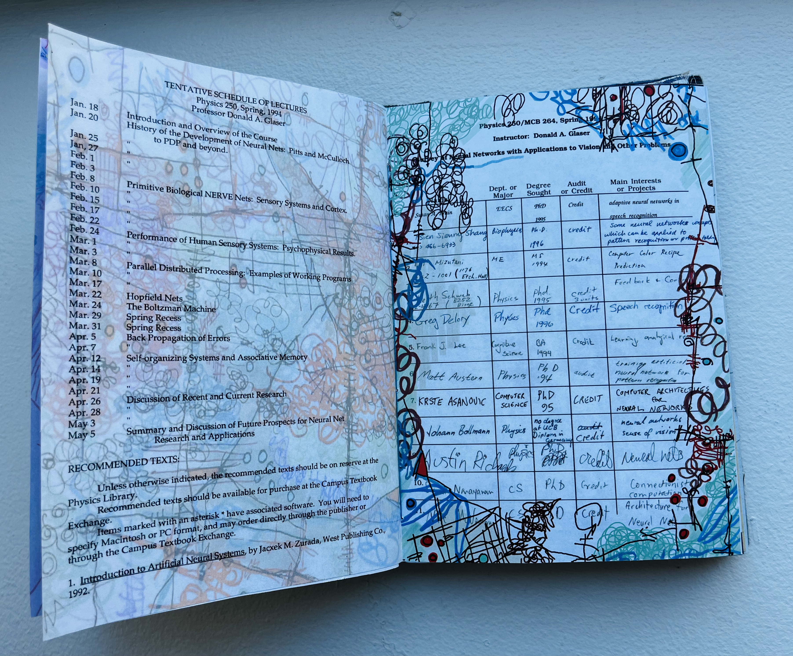